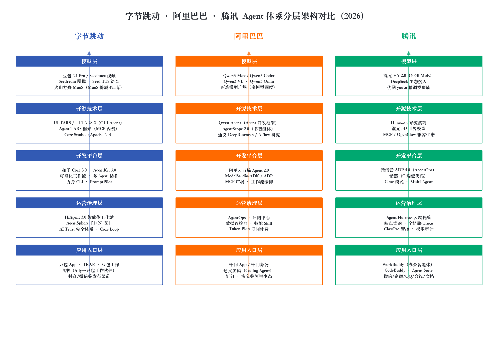
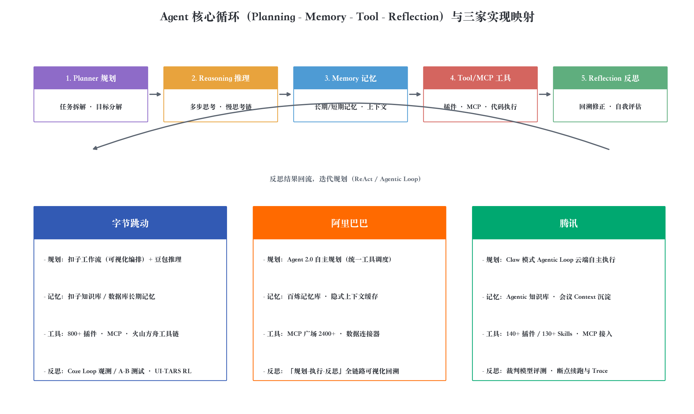
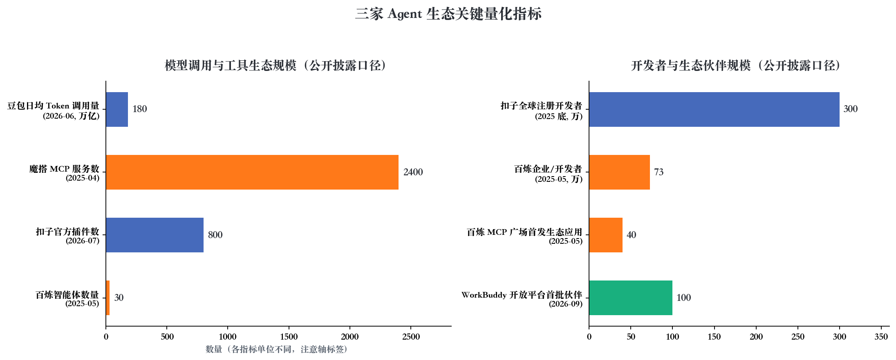

三家公司都已形成"自研大模型 + Agent 开发平台 + 场景应用"的完整 Agent 体系，但画的不是同一张图。O1走"全栈自建 + 开源生态"路线，AL走"模型开源 + 平台工程化"路线，O3走"生态驱动 + 云端托管"路线。一句话概括：O1赢在基础设施与开源，AL赢在模型与开发者生态，O3赢在渠道与生产级治理。
讨论"Agent 架构"容易混淆三个层次：单 Agent 的技术架构（规划、记忆、工具调用、反思的核心循环）、平台架构（模型接入、编排引擎、知识库、插件/MCP 生态、观测治理）、商业架构（产品矩阵、定价、渠道）。本报告用五层框架展开——模型层、开源技术层、开发平台层、运营治理层、应用入口层——再回到单 Agent 循环做技术映射。
选择 2026 年 10 月作为观察时点，是因为三家的 Agent 布局都在这一年完成关键跃迁：O1 6 月 FORCE 大会发布豆包 2.1 Pro 并全系升级 AgentKit 3.0 / HiAgent 3.0 / 扣子 3.0；O3 6 月发布 ADP 4.0 推出 Claw 模式，把平台升级为 AgentOps 底座；AL 3 月成立 ATH 事业群，把通义实验室、百炼、千问、悟空统一拉通。组织与产品同步变动，意味着 Agent 架构之争已从单点功能升级为体系化竞争。
底座是豆包大模型家族与火山方舟 MaaS。2026 年 6 月 FORCE 大会发布豆包 2.1 Pro，官方称其 Coding、Agent、视觉理解对标 Claude Opus 4.6，OSWorld、MobileWorld 等 Agent 评测居全球前列；豆包日均 Token 调用量突破 180 万亿，一年增长超 10 倍，IDC 口径中国公有云 MaaS 份额约 49.5% 居第一。模型矩阵覆盖文本（Doubao-Seed）、视频（Seedance 2.5）、图像（Seedream）、语音（Seed-TTS），是三家之中"全模态"供给最完整的。火山引擎总裁谭待的判断是：传统 IT 架构已无法满足 Agent 时代需求，以模型为中心的 AI 云原生架构正在形成，Tokens 取代传统计算资源成为核心计量单位——这套叙事为O1"卖基础设施"的商业模式提供了理论基础。
O1在 Agent 前沿技术上的最大筹码是 UI-TARS——原生 GUI Agent 模型，用数据飞轮 + 多轮强化学习把感知、推理、动作、记忆统一进端到端模型。UI-TARS-2 技术报告显示其 OSWorld 47.5 分、AndroidWorld 73.3 分、Online-Mind2Web 88.2 分，官方口径超越 Claude 与 OpenAI 同类 Agent。配套开源的 Agent TARS 框架以 MCP 为内核协议，抽象出 GUIAgent = Model（视觉语言模型）+ Operator（执行器）+ Context（上下文）三件套，并为浏览器、移动端提供可插拔 Operator。当多数厂商的 Agent 还停在"LLM + Function Calling"的文本世界时，UI-TARS 已把闭环推进到"像素级操作真实软件"，GitHub 超 3.4 万 Star。
平台层是"三驾马车"：扣子 Coze 3.0（零代码，2026 年 6 月升级多人多 Agent 协作，插件 800+、全球开发者超 300 万）、AgentKit 3.0（企业级，官方称模块化组件让代码量减少 96%）、方舟 CLI（一行指令接入）。2025 年 7 月O1把扣子全面开源为 Coze Studio（Apache 2.0，Golang 微服务 + React），配套开源运维平台 Coze Loop，形成"开发 + 观测"的开源闭环。治理层由 HiAgent 3.0 承接——"1+N+X"体系：AgentSphere 数字员工派遣站 + N 个开箱即用应用 + X 个定制业务应用，叠加 AI Trust 安全体系。
最新变化是组织整合：2026 年 8 月O1将 TRAE 与扣子团队整体并入豆包体系，飞书 AI 助手 Aily 更名"豆包工作伙伴"，豆包工作直接继承飞书的企业权限、聊天记录、文档与日程上下文。渠道侧扣子 Agent 可一键发布到飞书、微信、抖音、网页与 API。落地上，豆包大模型已搭载超 700 万辆汽车、覆盖 50 多个品牌，并进入特斯拉中国智能座舱（与 DeepSeek 双模型协同：豆包负责控制类指令，DeepSeek 负责闲聊资讯）。
O1体系的隐忧（第三方横评口径）：豆包工作发布偏晚，对手已跑马圈地；HiAgent 聚焦的大型民企/外企客群与当前央国企为主的预算流向存在错配；豆包模型在办公场景的表现不如 Seedance 在视频生成领域一骑绝尘。"基础设施厚度"领先，但"最懂办公的模型"与"最懂政企的销售体系"仍在补课。
AL是三家之中开源策略最激进的：200 余款开源模型、10 万+ 衍生模型，全球最大开源模型族群。面向 Agent 场景的关键型号：Qwen3-Coder（480B-A35B MoE，256K 原生上下文，主打 Agentic Coding）、Qwen3-VL（视觉智能体，可操作手机电脑）、Qwen3-Omni 全模态，以及 2026 年 8 月发布的 2.4 万亿参数 Qwen3.8。"快思考/慢思考"混合推理让规划、工具调用走快通道、复杂反思走慢通道，直接降低 Agent 多轮调用成本。开源的直接结果：AL在 Agent 时代的开发者心智很大程度由 Qwen 生态承载，魔搭社区聚集的 MCP 服务超过 2400 项。
双轨制开源框架：Qwen-Agent（Agent/FnCallAgent/Assistant/MultiAgentHub 类体系，原生集成 MCP、Docker 沙箱代码解释器、8K-100 万 token 长文档 RAG，且是 Qwen Chat 官方后端引擎）+ AgentScope 2.0（多智能体编排，ReActAgent + Toolkit 注册 + 模型主备切换）。与O1的 Agent TARS（TypeScript 栈、MCP 事件流内核）不同，AL两个框架都是 Python 栈，与 DashScope、vLLM、Gradio 集成顺滑，贴合算法工程师与数据开发者的偏好。
AL云百炼在 2025 年云栖大会确立"模型服务 + Agent 平台"双核定位。2026 年关键升级是 Agent 2.0：把知识库、MCP 统一抽象为"工具"，由智能体自主决定调用时机与顺序（旧版 Agent 1.0 是"先检索知识库再决策"的串行流程），并完整展示每一轮"规划-执行-反思"链路。配套 ModelStudio-ADK（代码级框架，官方称 1 小时可开发 DeepResearch 项目）与 ADP（低代码，20 万+ 开发者、80 万+ Agent）。2025 年 4 月百炼上线业界首个全生命周期 MCP 服务（免部署免运维），MCP 广场首批接入 40 余款生态应用；平台企业开发者超 73 万、智能体 30 多万个，年内调用量增长约 15 倍。工程细节体现平台思维：隐式上下文缓存按标准输入价 20% 计费，应用可发布为"组件"供嵌套复用。
C 端千问 App 免费，变现转移到千问办公——由内部 QoderWork、悟空、MuleRun 三款智能体产品整合而成（2026 年 7 月整合、8 月公测，个人标准版 98 元/月、企业版 198 元/月/席位）。B 端通义灵码深度集成魔搭 MCP 广场（2400+ 服务），支持任务自主拆解、多文件修改、快照回滚与个人/工程级记忆，插件下载量超 1500 万次。组织层面，2026 年 3 月成立的 ATH 事业群把通义大模型事业部、MaaS 业务线（百炼）、千问事业部与出身钉钉的悟空事业部纳入统一体系，周靖人转任集团 AI 首席架构师——这是对"模型、平台、应用割裂"的组织级回答。
O3的模型策略与众不同：不追求单一旗舰最强，而是围绕场景精调模型族。底座是 2025 年 12 月发布的混元 2.0（HY 2.0，MoE 406B 总参/32B 激活，256K 上下文，RLVR + RLHF 双阶段强化学习）；其上由优图实验室提供精调模型族：youtu-mrc（知识问答）、youtu-intent（意图识别）、youtu-agent（工具调用，Multi-Agent 模式默认调度模型）。工程意义在于：检索、意图识别、函数调用等关键环节从"通用大模型 + 提示词"升级为"专用小模型"，在延迟、成本与确定性上取得更好平衡。生态上 DeepSeek V3.x 双轨接入，2026 年 8 月开源 Hy4 preview（770B）；截至 2025 年底混元已在O3内部 900 余款应用落地。
C 端是O3元器（零代码搭建，一键分发 QQ/微信/应用宝，2026 年升级接入公众号、O3文档、微信支付 MCP）。企业级是 O3云 ADP：早期提供 LLM+RAG、Workflow、Multi-Agent 三大框架（20+ 画布节点、全局 Agent 智能回退、三种多 Agent 协同模式）。2026 年 6 月发布的 ADP 4.0 是最大变量——新增第四种模式 Claw（Agentic Loop）：Agent 在云端沙箱自主规划、编写、运行代码，调用企业 Skills 与连接器完成长链路任务，用户自然语言描述需求即可自动生成提示词、挂载知识库、编排工作流；同步实现 Agent 与 Workflow 双向互调（确定性环节走流程、开放环节唤起 Agent）、130+ 企业级 Skills 广场（带审批发布与版本管理）、Agent Portal，支持公有云/专有云/私有化/混合云四种部署。
O3在企业市场的差异化卖点是治理。ADP 底层是云端 Agent Harness 架构：Agent 运行、工具调用、权限控制、日志审计、资源调度统一纳入云端治理，支持断点自动续跑、闲置自动暂停、秒级故障恢复、全链路 Trace 可观测、密钥隔离托管，沙箱启动压缩到 100 毫秒级。配套 ClawPro 管控平台与内置裁判模型/规则/代码的多维评测体系。当 Agent 开始"真干活"（写代码、发邮件、改数据），出错不再是"回答质量差"而是"业务事故"——Harness 回答的是企业安全部门的同一个问题：这个 Agent 做了什么、能做什么、花了多少钱。这也是O3切入金融、政务、医疗等高合规行业的架构卖点。
明星产品是 WorkBuddy：2026 年 2 月内测、3 月 9 日上线的桌面智能体工作台，由 CodeBuddy 团队开发，定位"坐在桌面上的 AI 数字同事"——不只给建议，而是读取授权文件夹、跑脚本、操作 Office 并交付可验收的 Word/Excel/PPT/代码成果。三种模式（Ask 问答 / Plan 先规划 / Craft 全权限交付）、多模型切换（混元、DeepSeek、Kimi）与"微信远程指挥电脑干活"构成 C 端阵地。企业版提供 7×24 专家数字员工与项目制人机协作；Agent Suite 以 One ID 把O3文档、网盘、乐享原生接入 WorkBuddy，会议 Context 可被各类 Agent 经 MCP/Skills/CLI 调用。沙利文《2026 全球桌面 AI 智能体市场研究报告》称其居中国个人与企业双榜第一（咨询机构口径），IDC 企业级通用 Agent 评估综合得分第一；已覆盖 50+ 行业，开放平台首批引入 100 余家合作伙伴。
| 维度 | O1 | AL | O3 |
|---|---|---|---|
| 核心模型 | 豆包 2.1 Pro（闭源为主） | Qwen3 全系（激进开源） | 混元 2.0 + DeepSeek 双轨 |
| 旗舰平台 | 扣子 3.0 / AgentKit 3.0 | 百炼 Agent 2.0 | O3云 ADP 4.0 |
| 平台理念 | 多平台分客群 | 单平台全功能 | AgentOps 治理优先 |
| 开源代表作 | UI-TARS、Coze Studio、Agent TARS | Qwen 系列、Qwen-Agent、AgentScope | Hunyuan 系列 |
| MCP 生态 | 方舟 MCP 网关 | 百炼 MCP 广场（2400+） | 元器/ADP 均支持 |
| 分发渠道 | 飞书、抖音、微信 | 钉钉、淘宝、千问 App | 微信、企微、QQ、应用宝 |
| 主打应用 | 豆包、TRAE、豆包工作 | 千问办公、通义灵码 | WorkBuddy、CodeBuddy |
| 2026 组织动作 | TRAE+扣子并入豆包体系 | 成立 ATH 事业群 | CodeBuddy 统辖 WorkBuddy |
三个结构性差异：模型策略上O1追全模态规模、AL追开源生态尺寸全覆盖、O3求精调模型族双轨接入；平台策略上O1"一个客群一套平台"、AL"一个平台多形态"、O3"双端分工"；入口策略上O1押注抖音/飞书、AL押注钉钉/Qwen 心智、O3押注微信/企微国民级触达。

规划：O1用可视化工作流把规划产品化；AL Agent 2.0 完全交给模型；O3 Claw 下沉到云端沙箱的 Agentic Loop。记忆：O1靠扣子知识库 + 数据库长期记忆；AL靠百炼记忆库 + 隐式上下文缓存；O3靠乐享 Agentic 知识库 + 会议 Context 沉淀。反思：O1用 Coze Loop 观测 + 多轮 RL 把反思"训练进模型"（UI-TARS-2 在线反思）；AL把"规划-执行-反思"做成原生可观测链路；O3用裁判模型评测 + 断点续跑做成工程能力。
一个共同趋势：Agent 核心循环正从"提示词工程"迁移为"平台原生能力"。2024 年反思与规划还靠手写 ReAct 模板；到 2026 年，O1把循环做进模型（端到端 RL）、AL做进运行时（统一调度 + 回溯）、O3做进云端 Harness（续跑 + 审计）。竞争焦点从"谁的提示词技巧强"转向"谁的运行时基础设施更可靠"。

判断一：竞争焦点从模型能力转向体系能力。单看模型豆包、Qwen、混元各有胜负，但企业采购的是"模型 + 平台 + 治理 + 渠道"整体方案——O3以 AgentOps 切入、O1以全栈开源切入、AL以双核平台切入，都是对同一结论的不同应答。判断二：开源是最重要的战略变量。O1开源 Coze Studio 与 UI-TARS、AL开源整个 Qwen 家族，都在用开源换标准制定权与开发者心智；O3开源步伐相对保守，以兼容 OpenClaw 技能生态应对。判断三：2026 年主战场是企业办公"数字员工"。O1豆包工作并入飞书、AL千问办公整合三款产品、O3 WorkBuddy 双榜第一，三家殊途同归。
面向未来，三个值得持续跟踪的技术信号：其一，MCP 之后的智能体间协议（A2A 等）谁先标准化，决定跨平台 Agent 协作的入口归属；其二，GUI Agent / 端侧 Agent 落地速度，UI-TARS 与 Qwen3-VL 谁先打通"模型即操作员"的闭环，谁就能打开非 API 化的存量软件市场；其三，长时任务运行时（Agent Harness / Agentic Loop / 断点续跑）的工程成熟度，直接决定 Agent 能否从"演示"走向 7×24 生产在岗。
主要来源：火山引擎 FORCE 大会公开报道（新华网）、UI-TARS-2 技术报告（arXiv:2509.02544）、AL云百炼官方文档、2025 云栖大会发布要点、O3云 ADP 4.0 发布报道（品玩/IT之家）、O3混元 2.0 发布报道（新浪财经）、WorkBuddy 沙利文榜单报道（同花顺）、财新《AL AI 再集结》、2026 企业智能体平台榜单（与非网）。市场份额等数据多为厂商或咨询机构披露口径，引用时请注意甄别。